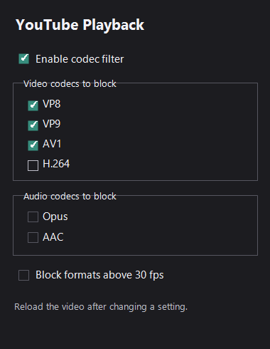

Less work off-screen
Firefox delays drawing video cards outside the screen until you scroll closer. Home, search, playlists, recommendations and supported comment lists keep their familiar layout.
MADE FOR FIREFOX · MADE FOR OLDER PCS
A small Firefox add-on that helps YouTube feel more at home on older hardware. Keep the familiar interface, with less work spent drawing what’s off-screen.
“YouTube feels much smoother on my old PC.”
A FEW SMART ADJUSTMENTS
Firefox delays drawing video cards outside the screen until you scroll closer. Home, search, playlists, recommendations and supported comment lists keep their familiar layout.
The add-on prepares the image connection early and gives up to four visible thumbnails a loading priority. Original image quality stays intact.
Favor H.264, which many older graphics chips can decode in hardware. Adjust video and audio codecs from the add-on menu.

YOUR BROWSER, YOUR SETTINGS
By default, Fluid for YouTube blocks VP8, VP9 and AV1 so YouTube can choose H.264 when it’s available. Opus, AAC and 60 fps remain available.
Open the extension menu to change codecs or turn off the filter. Reload the video after changing a playback setting.
Open source under the MIT LicenseA SMALL INDEPENDENT PROJECT
Created by xCC for older computers that still have plenty of videos left to watch. Tried on an i3 2nd generation PC with 12 GB DDR3 memory and a SATA SSD.
Preferences stay in Firefox. The extension does not collect usage data. Licensed under MIT. The codec filter is adapted from enhanced-h264ify by alextrv and erkserkserks, also MIT licensed.